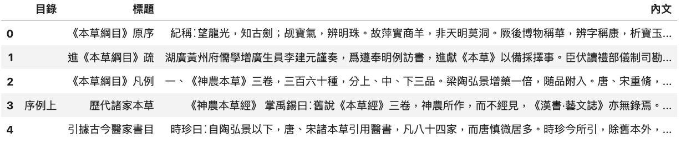
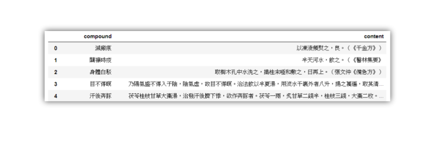
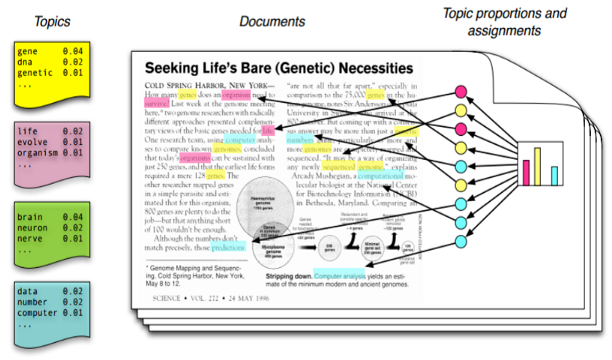

Decrypt Compendium of Materia Medica: Ancient Chinese unstructured text exploration , medicinal material , database construction and visual exploration analysis

Traditional Chinese medicine (TCM) is said to have a history of thousands of years. The story of Shen Nong tasting hundreds of herbs is no longer verifiable, but what cannot be denied is that TCM is built upon the wisdom recorded by ancient people through continuous experimentation with various animals, plants, and even minerals. The majority of TCM sources come from medicinal herbs of plant origin, and their usage is widespread. Despite the long and profound history of TCM, in modern medical history, Western medicine and pharmaceuticals have taken the spotlight. This is partly because Western medicine often provides immediate effects and follows a systematic and scientific approach to record and verify its practices. In contrast, TCM prescriptions vary for different practitioners and even for the same condition, leading to a perception of unreliability. However, with the progress of technology and the rapid and extensive dissemination of information in today's era, along with the introduction of Western scientific methods, the education of TCM practitioners has shifted from an apprenticeship system to a more professional, academic, and internationalized approach. Additionally, with the maturity of information technology, utilizing these techniques to handle unstructured TCM data will undoubtedly promote the modernization of TCM.
Objectives:
To organize and analyze the unstructured data in the field of TCM, this study initially focuses on analyzing a single ancient text. The chosen text is the most representative work, "Compendium of Materia Medica." This selection is based on its widespread recognition as an ancient TCM text and because it represents the wisdom extracted by Li Shizhen from multiple ancient texts. For this study, the "Compendium of Materia Medica" provides sufficient depth and breadth. The primary objectives of this research are as follows:- 1. Establish a structured TCM database to transform unstructured ancient texts into easily analyzable data.
- 2. Investigate the relationships and clusters among medicinal herbs, diseases, and compounds in the "Compendium of Materia Medica" using algorithms and machine learning.
- 3. Compare the research findings with the general public's usage and understanding of TCM.
Research Methodologies
The data source of this study is the full text of "Compendium of Materia Medica", which is divided into 16 volumes , with 1892 kinds of medicines and 11096 compounds. The tools used are Python, MySQL, Tableau, and Flask.
This study starts with data cleaning, and uses Python regular expressions for data extraction. Then, the preprocessed data is used to build a Chinese medicine database using MySQL. LDA clustering analysis and Apriori correlation analysis are used for data analysis, and then Tableau software is used for visual exploration and analysis of the Chinese medicine database.
Data Cleaning
Compendium of Materia Medica belongs to unstructured textual data (not neatly formatted data tables). The data is consisted by free-form text, and paragraphs. Due to the unstructured and noisy nature of text data, it is difficult to directly apply machine learning methods to it. We converted unstructured text data into structured text data by finding content rules and extracting data using Regular Expression.
Common issues of unstrctured text data
- 1. Data Missing
- 2. Wrong Format

Data Structuring
-
1. Convert table of contents, titles, and content into structured formats
Contents:

After reading the text, it is found that the table of contents, title, and content follow the following rulesItems Rules Table of contents It's followed by a blank line Title It's followed by indented content Content, Indent content Indent content
Use regular expression to extract table of contents, title, and content.

Convert table of content, titles, and content to structured format

-
2. Convert aliases, nature and taste, indications, compound, and parts into formatted formats
Content:
Use Regular Expression to extract aliases, nature and taste, indications, compound, and parts.

Convert aliases, nature and taste, indications, compound, and parts into structured format.

-
3. Convert nature and taste levels into structured format.
Content
 Score the taste levels from 0 to 3. 0 as the weakest and 3 as the strongest.
Score the taste levels from 0 to 3. 0 as the weakest and 3 as the strongest.
Attribute Scores Slightly cold 1 Cold 2 Very Cold 3
Use Regular Expression to extract the taste and nature levels.

Convert the levels of nature and taste to formatted text.

-
4. Convert compound to structured format
Content

Extract presription titles and descriptions with regular expression

Convert compound and description to formatted text

Building a relational database
The database comprises multiple tables containing information on Chinese herbal medicine and diseases. The structured text will be utilised to establish a relational database for facilitating future analysis.Database entity-relationship model

Database Relational Diagram

Data Analysis
-
1. Latent Dirichlet Allocation (LDA)
LDA is an unsupervised machine learning technique used to uncover underlying topic information within extensive document collections or corpora. It utilizes the "bag of words" approach, treating each document as a frequency vector, thereby converting text information into easily modeled numerical data. However, the bag of words approach disregards the order of words, which simplifies the problem while also presenting an opportunity for model enhancement. Each document represents a probability distribution of constituent topics, while each topic represents a probability distribution of numerous words.

Use LDA to cluster diseases
We used the LDA clustering method to extract distinct features of disease names, which are then grouped into 2 to 45 clusters. Currently, the maximum number of clusters achieved is 45. Expert consultation from relevant domains revealed that the results obtained with 45 clusters are the most easily interpretable. Moreover, experiments were conducted with more than 45 clusters to observe their outcomes.
-
2. Use Apriori to find connections between medicines
Within traditional Chinese medicine, the principle of compatibility known as the "Seven Emotions"(七情配伍) emphasizes the importance of combining herbal medicines. This is because the interaction between different herbs can lead to various effects: some may be incompatible, while others may enhance therapeutic efficacy. Additionally, certain combinations can result in toxic effects. The concept of the Seven Emotions(七情配伍) compatibility includes the following aspects:
Single Action(單行): Refers to the use of a single herb to achieve the desired effects without the need for additional herbs.
Mutual Complementarity(相須): Involves the combination of herbs with similar properties and therapeutic effects to enhance their original efficacy. For example:In the analysis results, Zhimu(知母) and Shashen(沙參) both possess heat-clearing properties. Fuling(茯苓) and Zexie(澤瀉), commonly used in clinical practice, are known for their diuretic and damp-draining effects. Fuling(茯苓) has a mild, sweet taste and is effective in promoting diuresis, draining dampness, and nourishing the heart.